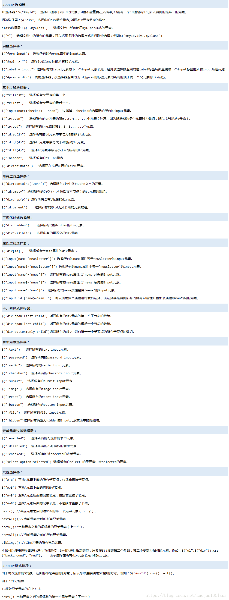

Js选择器总结
一、原生JS选择器#
JS选择器常用的有getElementById()、getElementsByName()、getElementsByTagName()、getElementsByClassName()、querySelector()、querySelectorAll()
- A： getElementById(ID): 返回对指定ID的第一个对象的引用，如果在文档中查找一个特定的元素，最有效的方法是getElementById()
- B: getElementsByName(name): 返回文档中name属性为name值的元素，因为name属性值不是唯一的，所以查询到的结果有可能返回的是一个数组，而不是一个元素。
- C: getElementsByTagName(tagname): 返回文档中指定标签的元素
- D: getElementsByClassName():返回文档中所有指定类名的元素
- E: querySelector():返回文档中匹配指定css选择器的第一个元素
- F: querySelectorAll():返回文档中匹配指定css选择器的第一个元素
二、jQuery选择器#
内容
基本选择器有ID选择器、类选择器、标签选择器、通用选择器，事件的添加方法如下：
$(...).事件名(function() { });
属性样式有：
$(...).css("border","1px solid red")
$(...).css({...})
$(...).css("border")
$(...).attr(属性名,值)
$(...).html() innerHTML
$(...).text() innerText
$(...).val() value值
$(...).addClass() 增加
$(...).removeClass() 移除
$(...).toggleClass() 开关**
选择器的详细使用方法：#
